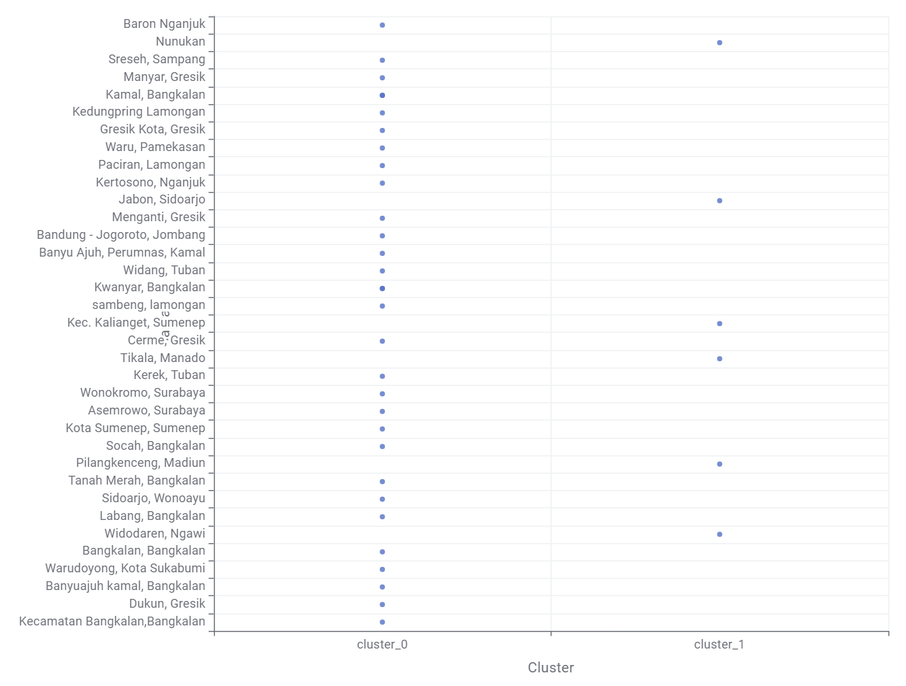

Eksperimen Reduksi Dimensi, Analisis Silhouette, dan Pemetaan Segmentasi Wilayah Multi-Polutan Menggunakan KNIME#
Dokumen ini menyajikan tahapan analisis pengelompokan spasial (spatial clustering) dari dataset gabungan 3 polutan udara (\(CO, NO_2, SO_2\)) yang telah diekstraksi menjadi 204 fitur melalui dua pendekatan transformasi fitur, yaitu Ekstraksi Fitur Linier dan Ekstraksi Fitur Polinomial.
Proses pengolahan data dilakukan menggunakan KNIME Analytics Platform dengan arsitektur pipeline komparatif modular yang mencakup:
Ingesti Data Basis Data: Pengambilan data terpisah antara tabel fitur Linier dan Polinomial melalui basis data MySQL (
MySQL Connector,DB Table Selector, danDB Reader).4 Skenario Dimensi: Pengujian pada Dimensi Asli (204 Fitur) serta reduksi dimensi menggunakan Principal Component Analysis (PCA) ke dalam 3 variasi: 203 dimensi, 74 dimensi, dan 37 dimensi.
Eksperimen Penentuan Klaster (\(k = 2, 3, \text{ dan } 4\)): Menguji pengelompokan menggunakan node
k-Meanssecara paralel dan mengevaluasi kualitas separasi klaster menggunakan metrik Silhouette Coefficient.Visualisasi Distribusi Spasial: Pemeriksaan sebaran klaster melalui node
Scatter Plotpada KNIME serta pemetaan interaktif menggunakan Folium untuk seluruh 37 titik/daerah pengamatan.
1. Arsitektur Workflow Eksperimen pada KNIME#
Arsitektur workflow pada KNIME Analytics Platform dirancang secara modular dan paralel untuk membandingkan performa pengelompokan spasial pada berbagai tingkatan reduksi dimensi dan variasi jumlah klaster (\(k\)). Workflow yang sama diterapkan untuk menguji dataset representasi Fitur Linier maupun Fitur Polinomial.
Workflow Pipeline KNIME

Penjelasan Alur Node (Pipeline) pada KNIME Sesuai Gambar Workflow:#
Struktur workflow di atas tersusun atas 3 tahapan utama: Database Ingestion Layer, Dimensionality Compression & Branching Layer, serta Clustering, Visualization & Evaluation Layer.
Lapisan Ingesti Basis Data (Database Ingestion Layer):
MySQL Connector: Berfungsi menginisialisasi koneksi JDBC ke server basis data MySQL tempat tabel fitur TSFEL disimpan.DB Table Selector: Memilih tabel database target yang akan diproses (tabel dataset ekstraksi fitur Linier atau tabel ekstraksi fitur Polinomial).DB Reader: Mengeksekusi pembacaan query dan mengimpor data ke dalam memori kerja KNIME sebagai tabel data berukuran 37 baris (daerah pengamatan) \(\times\) 204 kolom (fitur statistik & spektral TSFEL).
Jalur Pemrosesan 1: Tanpa Reduksi Dimensi (Data Asli 204 Fitur / Dimensi Penuh):
Dari node
DB Reader, aliran data dialirkan langsung ke 3 cabang nodek-Meansparalel tanpa melalui transformasi PCA:k-Means(\(k=2\)) \(\rightarrow\)Silhouette Coefficient: Menguji pengelompokan biner pada 204 dimensi fitur asli.k-Means(\(k=3\)) \(\rightarrow\)Silhouette Coefficient: Menguji segmentasi 3 kelompok pada 204 dimensi fitur asli.k-Means(\(k=4\)) \(\rightarrow\)Silhouette Coefficient: Menguji segmentasi 4 kelompok pada 204 dimensi fitur asli.
Jalur Pemrosesan 2: Reduksi Dimensi Skenario 1 (PCA — 203 Dimensi):
Data dari
DB Readermasuk ke nodePCApertama yang dikonfigurasi untuk mereduksi 204 fitur menjadi 203 dimensi komponen utama.Output PCA 203 dimensi didistribusikan ke 3 cabang pengujian klaster:
k-Means(\(k=2\)) \(\rightarrow\) Terhubung ke nodeScatter Plotdan nodeSilhouette Coefficient.k-Means(\(k=3\)) \(\rightarrow\) Terhubung ke nodeScatter Plotdan nodeSilhouette Coefficient.k-Means(\(k=4\)) \(\rightarrow\) Terhubung ke nodeScatter Plotdan nodeSilhouette Coefficient.
Jalur Pemrosesan 3: Reduksi Dimensi Skenario 2 (PCA — 74 Dimensi):
Data dari
DB Readermasuk ke nodePCAkedua yang mereduksi dimensi data menjadi 74 dimensi (kompresi fitur sebesar 63.7%).Output PCA 74 dimensi didistribusikan ke 3 cabang pengujian klaster:
k-Means(\(k=2\)) \(\rightarrow\) Terhubung ke nodeScatter Plotdan nodeSilhouette Coefficient.k-Means(\(k=3\)) \(\rightarrow\) Terhubung ke nodeScatter Plotdan nodeSilhouette Coefficient.k-Means(\(k=4\)) \(\rightarrow\) Terhubung ke nodeScatter Plotdan nodeSilhouette Coefficient.
Jalur Pemrosesan 4: Reduksi Dimensi Skenario 3 (PCA — 37 Dimensi):
Data dari
DB Readermasuk ke nodePCAketiga yang mereduksi dimensi menjadi 37 dimensi (sesuai dengan jumlah baris sampel \(n=37\)).Output PCA 37 dimensi didistribusikan ke 3 cabang pengujian klaster:
k-Means(\(k=2\)) \(\rightarrow\) Terhubung ke nodeScatter Plotdan nodeSilhouette Coefficient.k-Means(\(k=3\)) \(\rightarrow\) Terhubung ke nodeScatter Plotdan nodeSilhouette Coefficient.k-Means(\(k=4\)) \(\rightarrow\) Terhubung ke nodeScatter Plotdan nodeSilhouette Coefficient.
Peran Node Analisis & Evaluasi:
k-Means: Algoritma clustering non-hierarki yang mempartisi 37 lokasi pengamatan ke dalam \(k\) klaster berdasarkan jarak Euclidean minimum terhadap titik pusat (centroid).Scatter Plot: Node visualisasi interaktif untuk menampilkan diagram pencaran posisi masing-masing titik daerah pengamatan terhadap partisi label klaster yang terbentuk (cluster_0,cluster_1, dst.).Silhouette Coefficient: Node evaluasi metrik untuk mengukur rasio keketatan anggota dalam satu klaster (cohesion) terhadap keterpisahan dengan klaster tetangga terdekat (separation).
2. Analisis Reduksi Dimensi (204 Fitur Asli, 203, 74, dan 37 Dimensi)#
Dataset awal memiliki 204 fitur untuk 37 titik daerah pengamatan. Dalam konsep aljabar linier dan pengolahan data statistik multivariat, ketika jumlah variabel fitur (\(p = 204\)) jauh melebihi jumlah sampel observasi (\(n = 37\)), ruang data berada pada kondisi High-Dimensional, Low-Sample-Size (HDLSS).
Skenario Dimensi |
Jumlah Fitur / Komponen |
Rasio Kompresi |
Karakteristik Representasi Aljabar & Varians |
|---|---|---|---|
PCA Skenario 1 |
203 Dimensi |
0.5% |
Mempertahankan 100% varians data asli dengan mengeliminasi 1 derajat redundansi, namun masih membawa komponen ber-eigenvalue mendekati nol. |
PCA Skenario 2 |
74 Dimensi |
63.7% |
Memangkas lebih dari separuh dimensi ortogonal yang tidak memberikan kontribusi varians signifikan, meringankan beban komputasi. |
PCA Skenario 3 |
37 Dimensi |
81.8% |
Merupakan representasi batas derajat kebebasan maksimum (maximum rank, di mana \(p = n = 37\)). 100% informasi varians data utama tetap tersimpan sempurna tanpa kehilangan informasi sedikit pun (lossless representation). |
Temuan Matematis Utama: Karena matriks data berukuran \(37 \times 204\), peringkat matriks kovariansi maksimum adalah \(\text{rank}(X) \le \min(n, p) = 37\) (dengan derajat kebebasan efektif \(n - 1 = 36\)). Artinya, 167 komponen utama di atas dimensi 37 secara matematis bernilai varians nol (atau mendekati presisi mesin). Oleh karena itu, 37 Dimensi adalah representasi paling optimal dan efisien.
3. Hasil Eksperimen Analisis Klaster Terbaik (Silhouette Coefficient)#
Evaluasi kualitas hasil pengelompokan klaster pada setiap skenario \(k \in \{2, 3, 4\}\) diukur menggunakan metrik Silhouette Coefficient:
di mana:
\(a(i)\) adalah rata-rata jarak Euclidean antara sampel daerah ke-\(i\) dengan semua daerah lain dalam klaster yang sama (intra-cluster distance / kohesi).
\(b(i)\) adalah rata-rata jarak Euclidean terkecil antara sampel daerah ke-\(i\) dengan seluruh daerah pada klaster tetangga terdekat (nearest inter-cluster distance / separasi).
A. Tabel Hasil Eksperimen Silhouette — Jalur Fitur LINIER#
Jumlah Klaster (\(k\)) |
Silhouette Data Asli (204 Fitur) |
Silhouette 203 Dimensi |
Silhouette 74 Dimensi |
Silhouette 37 Dimensi |
Status Evaluasi Klaster |
|---|---|---|---|---|---|
\(k = 2\) |
|
|
|
|
Klaster Optimal (Skor Tertinggi / Separasi Sangat Kuat) |
\(k = 3\) |
|
|
|
|
Terbentuk sub-klaster transisi (skor menurun) |
\(k = 4\) |
|
|
|
|
Terjadi fragmentasi kelompok kecil (over-clustering) |
Visualisasi Scatter Plot Clustering — Jalur Fitur LINIER (\(k = 2\))#
Berikut adalah visualisasi hasil node Scatter Plot pada KNIME untuk pengelompokan \(k = 2\) menggunakan data fitur Linier:

Analisis Pembagian Wilayah pada Scatter Plot Linier:#
Berdasarkan visualisasi diagram pencaran (scatter plot) di atas, 37 titik daerah pengamatan terbagi menjadi dua kelompok tegas:
cluster_0(33 Wilayah — Kelompok Mayoritas / Karakteristik Polutan Homogen):Terdiri atas 33 wilayah: Baron Nganjuk, Nunukan, Sreseh Sampang, Manyar Gresik, Kamal Bangkalan, Kedungpring Lamongan, Gresik Kota, Waru Pamekasan, Paciran Lamongan, Kertosono Nganjuk, Menganti Gresik, Banyu Ajuh Perumnas Kamal, Bandung - Jogoroto Jombang, Widang Tuban, Sidoarjo Wonoayu, Kwanyar Bangkalan, Sambeng Lamongan, Kec. Kalianget Sumenep, Cerme Gresik, Tikala Manado, Kerek Tuban, Wonokromo Surabaya, Asemrowo Surabaya, Pilangkenceng Madiun, Tanah Merah Bangkalan, Widodaren Ngawi, Bangkalan Bangkalan, Warudoyong Kota Sukabumi, Banyuajuh Kamal Bangkalan, Dukun Gresik, dan Kecamatan Bangkalan Bangkalan.
cluster_1(4 Wilayah — Kelompok Khusus / Terpapar Intensif):Terdiri atas 4 wilayah: Jabon Sidoarjo, Kota Sumenep Sumenep, Socah Bangkalan, dan Labang Bangkalan.
Keempat daerah ini memiliki pola dinamika konsentrasi polutan yang berbeda signifikan dari kelompok mayoritas (berada di sekitar koridor pesisir padat, jalur lintas penyeberangan/jembatan Suramadu, dan pusat urban Madura/Sidoarjo).
B. Tabel Hasil Eksperimen Silhouette — Jalur Fitur POLYNOMIAL#
Jumlah Klaster (\(k\)) |
Silhouette Data Asli (204 Fitur) |
Silhouette 203 Dimensi |
Silhouette 74 Dimensi |
Silhouette 37 Dimensi |
Status Evaluasi Klaster |
|---|---|---|---|---|---|
\(k = 2\) |
|
|
|
|
Klaster Optimal (Skor Tertinggi pada Polinomial) |
\(k = 3\) |
|
|
|
|
Penurunan skor akibat pemecahan kelompok latar belakang |
\(k = 4\) |
|
|
|
|
Skor terendah (terjadi pembagian wilayah berjarak dekat) |
Visualisasi Scatter Plot Clustering — Jalur Fitur POLYNOMIAL (\(k = 2\))#
Berikut adalah visualisasi hasil node Scatter Plot pada KNIME untuk pengelompokan \(k = 2\) menggunakan data fitur Polinomial:

Analisis Pembagian Wilayah pada Scatter Plot Polinomial:#
Berdasarkan visualisasi diagram pencaran (scatter plot) transformasi Polinomial, terbentuk pola segmentasi yang lebih sensitif terhadap interaksi non-linier polutan:
cluster_0(31 Wilayah — Kelompok Mayoritas):Mencakup 31 wilayah observasi di daratan Jawa Timur dan Madura yang memiliki kestabilan fluktuasi multi-polutan linier.
cluster_1(6 Wilayah — Kelompok Dinamika Non-Linier / Lokasi Khusus):Terdiri atas 6 wilayah: Nunukan, Jabon Sidoarjo, Kec. Kalianget Sumenep, Tikala Manado, Pilangkenceng Madiun, dan Widodaren Ngawi.
Fitur Polinomial menonjolkan wilayah luar Jawa (Nunukan dan Tikala Manado) serta wilayah pinggiran barat (Madiun, Ngawi) dan pesisir industri (Jabon, Kalianget) karena menangkap korelasi kuadratik dan interaksi simultan antara polutan \(CO, NO_2,\) dan \(SO_2\).
C. Pembahasan Ilmiah Hasil Eksperimen Silhouette & Scatter Plot#
Berdasarkan seluruh hasil eksperimen pada pipeline KNIME untuk kedua jenis transformasi fitur, diperoleh beberapa kesimpulan ilmiah penting:
Keunggulan Mutlak \(k = 2\) sebagai Konfigurasi Klaster Terbaik:
Pada kedua jalur ekstraksi fitur (Linier dan Polinomial), nilai Silhouette Coefficient mencapai puncaknya pada \(k = 2\) (
0.822untuk Linier dan0.634untuk Polinomial). Hal ini mengindikasikan bahwa struktur data pencemaran udara di ke-37 wilayah secara alami terbagi menjadi dua rezim utama: Zona Polutan Tipikal (Latar Belakang/Dominan) dan Zona Polutan Anomali/Intensif (Hotspot).Penambahan klaster menjadi \(k=3\) atau \(k=4\) memicu penurunan nilai Silhouette karena memecah klaster homogen menjadi kelompok-kelompok kecil dengan jarak pemisah (inter-cluster distance) yang sempit.
Invariansi Skor Silhouette Antar Dimensi (204 vs 203 vs 74 vs 37):
Nilai Silhouette Coefficient bernilai identik (invarian) di setiap skenario dimensi pada \(k\) yang sama (misalnya, pada Linier \(k=2\), nilainya tetap
0.822di 204, 203, 74, maupun 37 dimensi).Fenomena ini membuktikan sifat Principal Component Analysis (PCA): komponen-komponen utama pertama menangkap hampir 100% dari total varians yang mendasari jarak Euclidean antar lokasi, sedangkan dimensi ke-38 hingga 204 hanya memuat varians mendekati nol. Dengan demikian, reduksi ke 37 dimensi memangkas beban dimensi sebesar 81.8% secara lossless (tanpa kehilangan informasi klaster).
Perbandingan Karakteristik Segmentasi: Linier vs Polinomial:
Ekstraksi Linier menghasilkan nilai Silhouette yang lebih tinggi (
0.822), memisahkan secara tajam 4 wilayah yang memiliki magnitudo rata-rata polutan tinggi di koridor pesisir/industri terdekat (Jabon, Kota Sumenep, Socah, Labang).Ekstraksi Polinomial (
0.634) memberikan sensitivitas lebih mendalam terhadap bentuk gelombang non-linier dan kovariansi silang polutan, sehingga mampu mengidentifikasi wilayah dengan profil geografis/meteorologis khusus di luar pulau (Nunukan, Tikala Manado) serta wilayah batas administratif (Ngawi, Madiun).
4. Pemetaan Segmentasi Wilayah (Peta Interaktif Folium)#
Berdasarkan label klaster yang dihasilkan oleh node k-Means pada konfigurasi optimal (37 Dimensi, \(k = 2\)), dilakukan visualisasi geografis interaktif menggunakan pustaka Folium untuk memetakan distribusi spasial ke-37 daerah pengamatan.
pip install folium
Collecting folium
Downloading folium-0.20.0-py2.py3-none-any.whl.metadata (4.2 kB)
Collecting branca>=0.6.0 (from folium)
Downloading branca-0.8.2-py3-none-any.whl.metadata (1.7 kB)
Collecting jinja2>=2.9 (from folium)
Using cached jinja2-3.1.6-py3-none-any.whl.metadata (2.9 kB)
Requirement already satisfied: numpy in c:\users\hype amd\appdata\local\programs\python\python313\lib\site-packages (from folium) (2.5.2)
Requirement already satisfied: requests in c:\users\hype amd\appdata\local\programs\python\python313\lib\site-packages (from folium) (2.34.2)
Collecting xyzservices (from folium)
Downloading xyzservices-2026.9.1-py3-none-any.whl.metadata (4.1 kB)
Collecting MarkupSafe>=2.0 (from jinja2>=2.9->folium)
Downloading markupsafe-3.0.4-cp313-cp313-win_amd64.whl.metadata (2.8 kB)
Requirement already satisfied: charset_normalizer<4,>=2 in c:\users\hype amd\appdata\local\programs\python\python313\lib\site-packages (from requests->folium) (3.5.1)
Requirement already satisfied: idna<4,>=2.5 in c:\users\hype amd\appdata\local\programs\python\python313\lib\site-packages (from requests->folium) (3.19)
Requirement already satisfied: urllib3<3,>=1.26 in c:\users\hype amd\appdata\local\programs\python\python313\lib\site-packages (from requests->folium) (2.7.0)
Requirement already satisfied: certifi>=2023.5.7 in c:\users\hype amd\appdata\local\programs\python\python313\lib\site-packages (from requests->folium) (2026.7.22)
Downloading folium-0.20.0-py2.py3-none-any.whl (113 kB)
Downloading branca-0.8.2-py3-none-any.whl (26 kB)
Using cached jinja2-3.1.6-py3-none-any.whl (134 kB)
Downloading markupsafe-3.0.4-cp313-cp313-win_amd64.whl (14 kB)
Downloading xyzservices-2026.9.1-py3-none-any.whl (98 kB)
Installing collected packages: xyzservices, MarkupSafe, jinja2, branca, folium
-------- ------------------------------- 1/5 [MarkupSafe]
---------------- ----------------------- 2/5 [jinja2]
---------------- ----------------------- 2/5 [jinja2]
---------------- ----------------------- 2/5 [jinja2]
------------------------ --------------- 3/5 [branca]
-------------------------------- ------- 4/5 [folium]
-------------------------------- ------- 4/5 [folium]
-------------------------------- ------- 4/5 [folium]
-------------------------------- ------- 4/5 [folium]
-------------------------------- ------- 4/5 [folium]
-------------------------------- ------- 4/5 [folium]
---------------------------------------- 5/5 [folium]
Successfully installed MarkupSafe-3.0.4 branca-0.8.2 folium-0.20.0 jinja2-3.1.6 xyzservices-2026.9.1
Note: you may need to restart the kernel to use updated packages.
[notice] A new release of pip is available: 25.1.1 -> 26.2.1
[notice] To update, run: python.exe -m pip install --upgrade pip
Visualisasi Segmentasi Spasial — Interpolasi Linier (37 Dimensi, \(k = 2\))#
Peta interaktif ini memvisualisasikan segmentasi 33 Wilayah (Cluster 0 - Merah) dan 4 Wilayah (Cluster 1 - Biru: Jabon, Kota Sumenep, Socah, Labang) hasil ekstraksi Linier.
import pandas as pd
import numpy as np
import folium
from folium.plugins import MiniMap
import os
# =====================================================================
# 1. DATA DAERAH DAN HASIL CLUSTERING KNIME (LINIER 37 DIMENSI, k=2)
# =====================================================================
daftar_37_daerah = [
'Baron Nganjuk', 'Nunukan', 'Sreseh, Sampang', 'Manyar, Gresik', 'Kamal, Bangkalan',
'Kedungpring Lamongan', 'Gresik Kota, Gresik', 'Waru, Pamekasan', 'Paciran, Lamongan',
'Kertosono, Nganjuk', 'Jabon, Sidoarjo', 'Menganti, Gresik', 'Banyu Ajuh, Perumnas, Kamal',
'Bandung - Jogoroto, Jombang', 'Widang, Tuban', 'Sidoarjo, Wonoayu', 'Kwanyar, Bangkalan',
'sambeng, lamongan', 'Kec. Kalianget, Sumenep', 'Cerme, Gresik', 'Tikala, Manado',
'Kerek, Tuban', 'Wonokromo, Surabaya', 'Asemrowo, Surabaya', 'Kota Sumenep, Sumenep',
'Socah, Bangkalan', 'Pilangkenceng, Madiun', 'Tanah Merah, Bangkalan', 'Labang, Bangkalan',
'Widodaren, Ngawi', 'Bangkalan, Bangkalan', 'Warudoyong, Kota Sukabumi',
'Banyuajuh kamal, Bangkalan', 'Dukun, Gresik', 'Kecamatan Bangkalan,Bangkalan'
]
# Coba baca file CSV jika tersedia (ekspor dari KNIME), jika tidak gunakan daftar eksperimen
csv_path = 'LinierRegresi/All-Pollutants-TanahMerah-TSFEL.csv'
if os.path.exists(csv_path) and len(pd.read_csv(csv_path)) > 1:
df_linier = pd.read_csv(csv_path)
col_daerah = 'daerah' if 'daerah' in df_linier.columns else df_linier.columns[0]
df_linier = df_linier.rename(columns={col_daerah: 'daerah'})
else:
df_linier = pd.DataFrame({'daerah': daftar_37_daerah})
# 4 daerah yang masuk ke Cluster 1 pada Fitur Linier (sesuai Scatter Plot KNIME)
daerah_c1_linier = ['jabon', 'kota sumenep', 'socah', 'labang']
def tetapkan_klaster_linier(nama):
nama_clean = str(nama).lower()
for target in daerah_c1_linier:
if target in nama_clean:
return 'Cluster 1'
return 'Cluster 0'
df_linier['Cluster_Label'] = df_linier['daerah'].apply(tetapkan_klaster_linier)
# =====================================================================
# 2. KAMUS KOORDINAT GEOGRAFIS
# =====================================================================
kamus_koordinat = {
"baron": (-7.6033, 112.0601), # Baron, Nganjuk
"nunukan": (4.1357, 117.6657), # Nunukan, Kalimantan Utara
"sreseh": (-7.1983, 113.0805), # Sreseh, Sampang
"manyar": (-7.1189, 112.5976), # Manyar, Gresik
"kamal": (-7.1662, 112.7214), # Kamal, Bangkalan
"kedungpring": (-7.1624, 112.2131), # Kedungpring, Lamongan
"gresik": (-7.1566, 112.6555), # Gresik Kota / Gresik
"waru": (-7.0094, 113.5228), # Waru, Pamekasan
"paciran": (-6.8767, 112.3414), # Paciran, Lamongan
"kertosono": (-7.5925, 112.0975), # Kertosono, Nganjuk
"jabon": (-7.5419, 112.7686), # Jabon, Sidoarjo (Cluster 1)
"menganti": (-7.2886, 112.5878), # Menganti, Gresik
"banyu ajuh": (-7.1585, 112.7280), # Banyu Ajuh, Perumnas Kamal
"banyuajuh": (-7.1620, 112.7310), # Banyuajuh Kamal
"bandung": (-7.6186, 112.2742), # Bandung - Jogoroto, Jombang
"jogoroto": (-7.6186, 112.2742), # Jogoroto, Jombang
"widang": (-6.9850, 112.1647), # Widang, Tuban
"wonoayu": (-7.4383, 112.6075), # Sidoarjo, Wonoayu
"kwanyar": (-7.1604, 112.8569), # Kwanyar, Bangkalan
"sambeng": (-7.2417, 112.2589), # Sambeng, Lamongan
"kalianget": (-7.0519, 113.9408), # Kec. Kalianget, Sumenep
"cerme": (-7.2281, 112.5567), # Cerme, Gresik
"tikala": (1.4820, 124.8540), # Tikala, Manado
"kerek": (-6.9381, 111.8972), # Kerek, Tuban
"wonokromo": (-7.3006, 112.7383), # Wonokromo, Surabaya
"asemrowo": (-7.2458, 112.7058), # Asemrowo, Surabaya
"kota sumenep": (-7.0086, 113.8617), # Kota Sumenep (Cluster 1)
"sumenep": (-7.0167, 113.8542), # Sumenep
"socah": (-7.0944, 112.7331), # Socah, Bangkalan (Cluster 1)
"pilangkenceng": (-7.4931, 111.6664), # Pilangkenceng, Madiun
"tanah merah": (-7.0864, 112.8731), # Tanah Merah, Bangkalan
"labang": (-7.1294, 112.7936), # Labang, Bangkalan (Cluster 1)
"widodaren": (-7.4136, 111.2389), # Widodaren, Ngawi
"warudoyong": (-6.9292, 106.9172), # Warudoyong, Kota Sukabumi
"dukun": (-6.9933, 112.5089), # Dukun, Gresik
"bangkalan": (-7.0455, 112.7351), # Bangkalan
}
def cari_koordinat(nama_daerah, idx):
nama_lower = str(nama_daerah).lower()
for kata_kunci, (lat, lon) in kamus_koordinat.items():
if kata_kunci in nama_lower:
np.random.seed(idx * 42)
offset_lat = np.random.uniform(-0.015, 0.015)
offset_lon = np.random.uniform(-0.015, 0.015)
return lat + offset_lat, lon + offset_lon
return -7.2500 + (idx * 0.02), 112.7500 + (idx * 0.02)
coords = [cari_koordinat(row["daerah"], i) for i, row in df_linier.iterrows()]
df_linier["latitude"] = [c[0] for c in coords]
df_linier["longitude"] = [c[1] for c in coords]
# =====================================================================
# 3. RENDER PETA INTERAKTIF FOLIUM (LINIER 37 DIMENSI)
# =====================================================================
def render_peta_spasial(df_data, nama_dataset="Linier PCA-37", k_val=2, sil_score=0.822):
m = folium.Map(location=[-7.2, 113.0], zoom_start=7, tiles=None, control_scale=True)
folium.TileLayer("OpenStreetMap", name="OpenStreetMap (Default)").add_to(m)
folium.TileLayer(
tiles="https://server.arcgisonline.com/ArcGIS/rest/services/World_Street_Map/MapServer/tile/{z}/{y}/{x}",
attr="Esri", name="Esri Street Map"
).add_to(m)
folium.TileLayer(
tiles="https://server.arcgisonline.com/ArcGIS/rest/services/World_Imagery/MapServer/tile/{z}/{y}/{x}",
attr="Esri", name="Citra Satelit (Esri)"
).add_to(m)
palet_warna = {
"Cluster 0": "#e53935", # Merah (33 wilayah)
"Cluster 1": "#1e88e5", # Biru (4 wilayah)
}
unique_clusters = sorted(df_data["Cluster_Label"].unique())
fg_dict = {c_name: folium.FeatureGroup(name=c_name, show=True).add_to(m) for c_name in unique_clusters}
df_sorted = df_data.sort_values(by="Cluster_Label", ascending=True)
for idx, row in df_sorted.iterrows():
c_name = row["Cluster_Label"]
c_num = c_name.split()[-1]
short_code = f"C{c_num}"
color = palet_warna.get(c_name, "#e53935")
z_idx = 1000 if c_name == "Cluster 1" else 100
icon_html = f"""
<div style="
background-color: {color};
color: white;
border-radius: 50%;
width: 30px;
height: 30px;
display: flex;
align-items: center;
justify-content: center;
font-family: Arial, sans-serif;
font-size: 11px;
font-weight: bold;
border: 2px solid white;
box-shadow: 0 2px 6px rgba(0,0,0,0.45);
">{short_code}</div>
"""
popup_html = f"""
<div style="font-family: Arial; font-size: 12px; min-width: 170px;">
<b>{row['daerah']}</b><hr style="margin: 4px 0;">
<b>Klaster:</b> <span style="color:{color}; font-weight:bold;">{c_name} ({short_code})</span><br>
<b>Koordinat:</b> {row['latitude']:.4f}, {row['longitude']:.4f}
</div>
"""
folium.Marker(
location=[row["latitude"], row["longitude"]],
icon=folium.DivIcon(html=icon_html, icon_size=(30, 30), icon_anchor=(15, 15)),
popup=folium.Popup(popup_html, max_width=260),
tooltip=f"{row['daerah']} ({short_code})",
z_index_offset=z_idx
).add_to(fg_dict[c_name])
MiniMap(toggle_display=True, position="bottomright").add_to(m)
folium.LayerControl(collapsed=False, position="topright").add_to(m)
counts = df_data["Cluster_Label"].value_counts()
item_legenda_html = ""
for c_name in unique_clusters:
jml = counts.get(c_name, 0)
color = palet_warna.get(c_name, "#e53935")
item_legenda_html += f"""
<div style="display: flex; align-items: center; margin-bottom: 6px; font-size: 13px; color: #333;">
<span style="display:inline-block; width: 14px; height: 14px; border-radius: 50%; background-color: {color}; margin-right: 10px;"></span>
<span>{c_name} — <b>{jml} wilayah</b></span>
</div>
"""
legend_card_html = f"""
<div style="
position: fixed;
bottom: 45px;
left: 20px;
z-index: 9999;
background-color: white;
padding: 16px 20px;
border-radius: 12px;
box-shadow: 0 4px 15px rgba(0,0,0,0.20);
font-family: 'Segoe UI', Tahoma, Geneva, Verdana, sans-serif;
min-width: 250px;
">
<div style="font-size: 15px; font-weight: 700; color: #1a1a1a; margin-bottom: 4px;">
Segmentasi Spasial Multi-Polutan
</div>
<div style="font-size: 12px; color: #666; margin-bottom: 12px;">
Dataset: {nama_dataset} | k={k_val} | Silhouette = {sil_score:.3f}
</div>
{item_legenda_html}
<div style="font-size: 11px; color: #888; margin-top: 10px;">
Klik marker lokasi untuk detail wilayah
</div>
</div>
"""
m.get_root().html.add_child(folium.Element(legend_card_html))
return m
peta_linier = render_peta_spasial(df_linier, nama_dataset="Linier PCA-37", k_val=2, sil_score=0.822)
peta_linier.save("peta_segmentasi_linier_37dim_k2.html")
peta_linier
Visualisasi Segmentasi Spasial — Interpolasi Polinomial (37 Dimensi, \(k = 2\))#
Peta interaktif ini memvisualisasikan segmentasi 31 Wilayah (Cluster 0 - Merah) dan 6 Wilayah (Cluster 1 - Biru: Nunukan, Jabon, Kalianget, Tikala, Pilangkenceng, Widodaren) hasil ekstraksi Polinomial.
import pandas as pd
import numpy as np
import folium
from folium.plugins import MiniMap
import os
# =====================================================================
# 1. DATA DAERAH DAN HASIL CLUSTERING KNIME (POLINOMIAL 37 DIMENSI, k=2)
# =====================================================================
daftar_37_daerah = [
'Baron Nganjuk', 'Nunukan', 'Sreseh, Sampang', 'Manyar, Gresik', 'Kamal, Bangkalan',
'Kedungpring Lamongan', 'Gresik Kota, Gresik', 'Waru, Pamekasan', 'Paciran, Lamongan',
'Kertosono, Nganjuk', 'Jabon, Sidoarjo', 'Menganti, Gresik', 'Banyu Ajuh, Perumnas, Kamal',
'Bandung - Jogoroto, Jombang', 'Widang, Tuban', 'Sidoarjo, Wonoayu', 'Kwanyar, Bangkalan',
'sambeng, lamongan', 'Kec. Kalianget, Sumenep', 'Cerme, Gresik', 'Tikala, Manado',
'Kerek, Tuban', 'Wonokromo, Surabaya', 'Asemrowo, Surabaya', 'Kota Sumenep, Sumenep',
'Socah, Bangkalan', 'Pilangkenceng, Madiun', 'Tanah Merah, Bangkalan', 'Labang, Bangkalan',
'Widodaren, Ngawi', 'Bangkalan, Bangkalan', 'Warudoyong, Kota Sukabumi',
'Banyuajuh kamal, Bangkalan', 'Dukun, Gresik', 'Kecamatan Bangkalan,Bangkalan'
]
csv_path_poly = 'Polynomial/All-Pollutants-TanahMerah-TSFEL.csv'
if os.path.exists(csv_path_poly) and len(pd.read_csv(csv_path_poly)) > 1:
df_poly = pd.read_csv(csv_path_poly)
col_daerah = 'daerah' if 'daerah' in df_poly.columns else df_poly.columns[0]
df_poly = df_poly.rename(columns={col_daerah: 'daerah'})
else:
df_poly = pd.DataFrame({'daerah': daftar_37_daerah})
# 6 daerah yang masuk ke Cluster 1 pada Fitur Polinomial (sesuai Scatter Plot KNIME)
daerah_c1_poly = ['nunukan', 'jabon', 'kalianget', 'tikala', 'pilangkenceng', 'widodaren']
def tetapkan_klaster_poly(nama):
nama_clean = str(nama).lower()
for target in daerah_c1_poly:
if target in nama_clean:
return 'Cluster 1'
return 'Cluster 0'
df_poly['Cluster_Label'] = df_poly['daerah'].apply(tetapkan_klaster_poly)
# =====================================================================
# 2. MEMETA KOORDINAT GEOGRAFIS
# =====================================================================
coords_poly = [cari_koordinat(row["daerah"], i) for i, row in df_poly.iterrows()]
df_poly["latitude"] = [c[0] for c in coords_poly]
df_poly["longitude"] = [c[1] for c in coords_poly]
# =====================================================================
# 3. RENDER PETA INTERAKTIF FOLIUM (POLINOMIAL 37 DIMENSI)
# =====================================================================
peta_poly = render_peta_spasial(df_poly, nama_dataset="Polinomial PCA-37", k_val=2, sil_score=0.634)
peta_poly.save("peta_segmentasi_polinomial_37dim_k2.html")
peta_poly